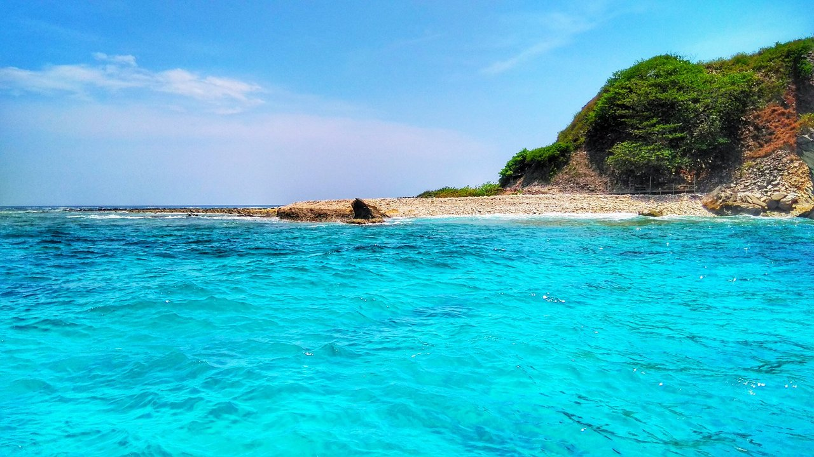
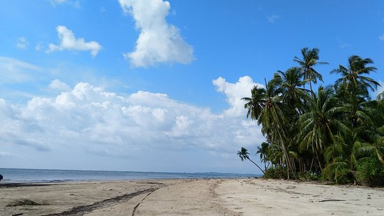

Ngapali
Besides the vibrant culture, pagodas, temples and jungle mountains in Myanmar, there are also some of the most pristine beaches in all of Southeast Asia. Miles of empty white sand beaches, brilliant turquoise seas, all backed by towering coconut palms, Ngapali is Myanmar’s premier beach destination. Intimate resorts offer visitors the chance to swim, sail, kayak, and feast on lobster and prawn by candle light as the sun sinks into the Indian Ocean. Ngapali is the perfect place to unwind and savor those few precious weeks in Myanmar. Get ready to treat yourself to the experience of a lifetime.

Ngwe Saung
More sophisticated than nearby Chaung Tha Beach, and with finer sand and clearer, deeper water, palm-fringed Ngwe Saung Beach has emerged as a hip destination for Yangon's new rich. These days the northern end of the beach is occupied by a succession of upscale resorts. But backpackers have long found a home here too – the southern end has budget bungalows and an agreeably laid-back vibe. Foreign visitors tend to prefer this to Chaung Tha's more raucous atmosphere. Dividing the north and south of the 13 miles of beach here is Ngwe Saung Village, where there's an increasing crop of decent restaurants. Given Ngwe Saung's relative proximity to Yangon – it's a six-hour bus ride away – this is perhaps the best place in Myanmar for a beach getaway that won't break the bank.

Chaung Tar
Chaung Tha Beach is the closest thing Myanmar has to a holiday resort for ordinary folks – it's where the locals come to play. At this very Burmese beach party there's bobbing about on rubber rings, plodding along the beach on ponies, endless guitar playing, boisterous beach-football games, happy family picnics and evening fireworks.Just 25 miles west of Pathein and six-odd hours from Yangon, Chaung Tha gets especially busy at weekends and on holidays. It's not the most awe-inspiring coastline – parts of the beach can get dirty in high season – and the resorts are not aimed at foreigners. But if you're looking to squeeze some sand and sun into your visit to Myanmar, it's a relatively convenient and affordable option and, unlike Ngwe Saung Beach further south, a fair few places stay open year-round.